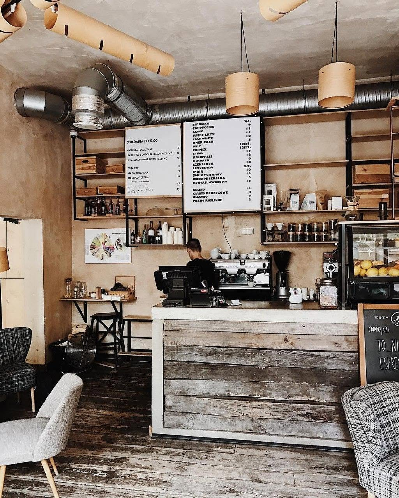

Kawa i śniadania na Powiślu
Kawiarnia na Powiślu
Fabryczna to mała, przytulna kawiarnia na warszawskim Powiślu, przy cichej ulicy Fabrycznej. Retro fotele, drewniana podłoga i światło wpadające przez okno sprawiają, że łatwo zostać tu dłużej. Naprzeciwko jest park Rydza-Śmigłego.
Do kawy zjesz shakshukę, chleb z awokado i jajkiem albo jajecznicę ze szpinakiem, a na deser banana bread lub cynamonowy wypiek.

Zamów kawę
Zamów na wynos albo zarezerwuj stolik przez zewnętrzne platformy lub kontakt bezpośredni.
Odwiedź nas
Kawiarnia Fabrycznaul. Fabryczna 28/30
00-446 Warszawa, Powiśle
tel. 692 431 717 Otwórz mapę
- Poniedziałek – piątek8:00 – 19:00
- Sobota9:00 – 19:00
- Niedziela9:00 – 19:00